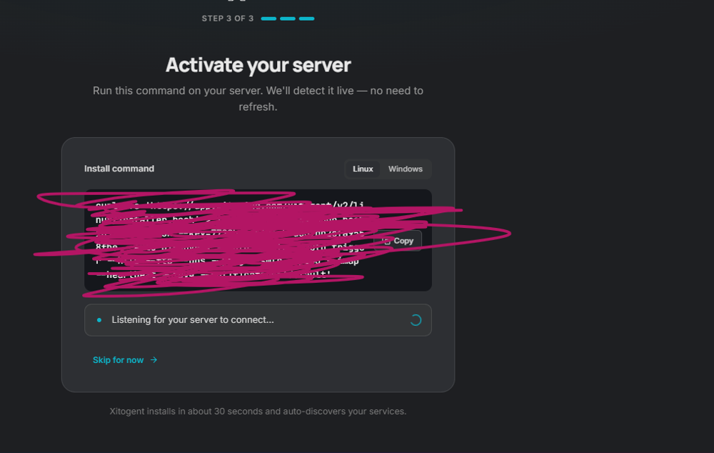
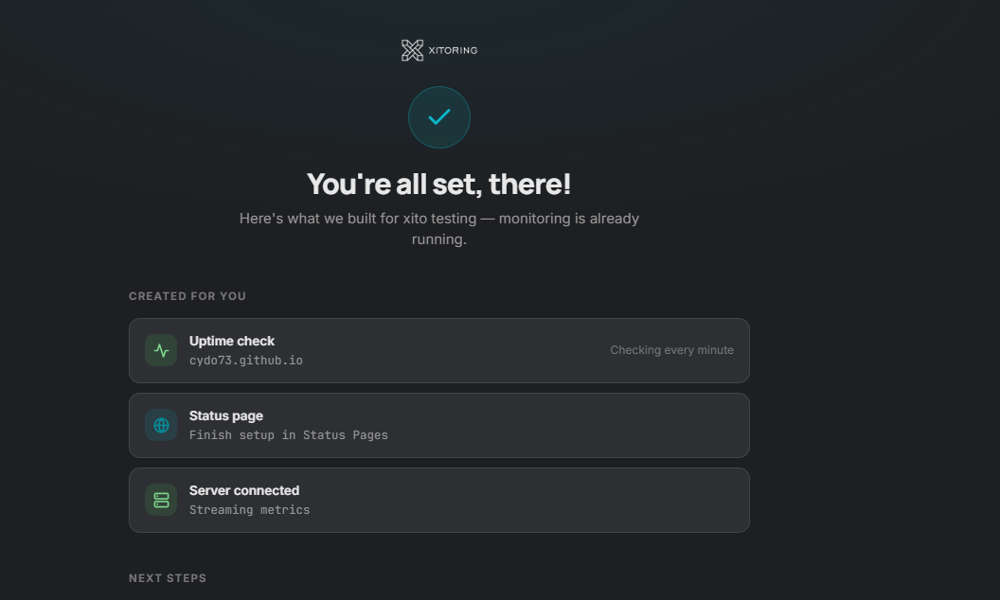
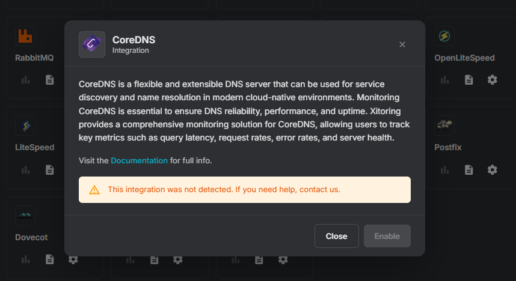
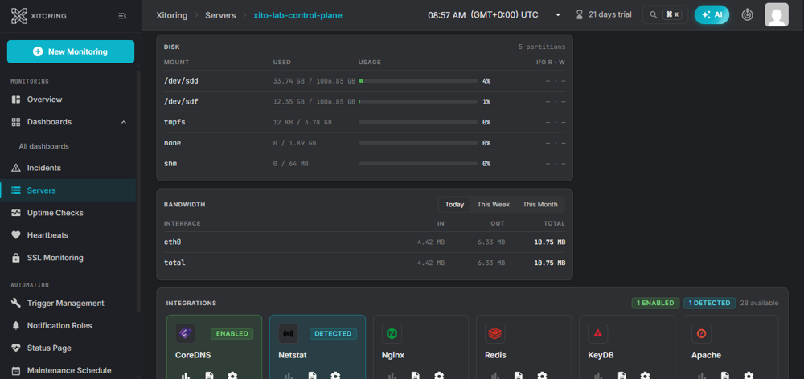
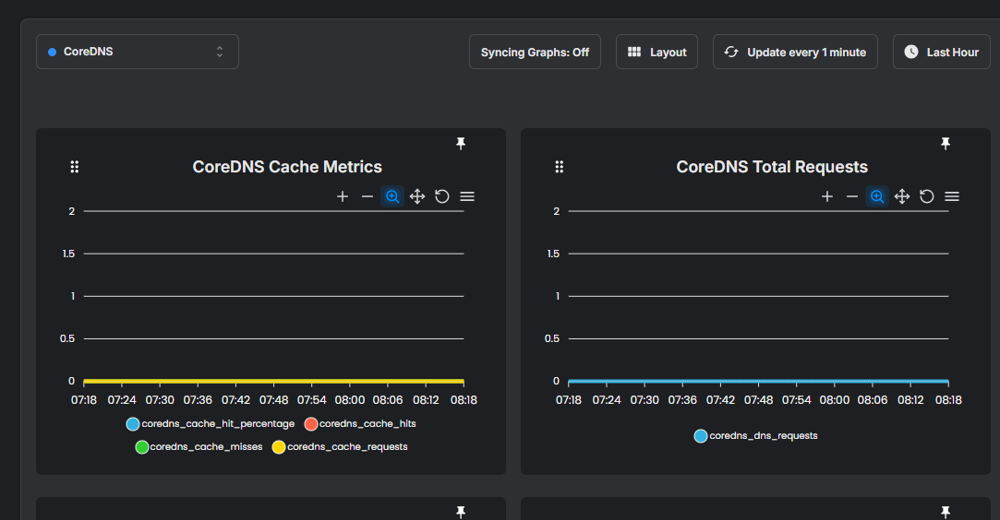
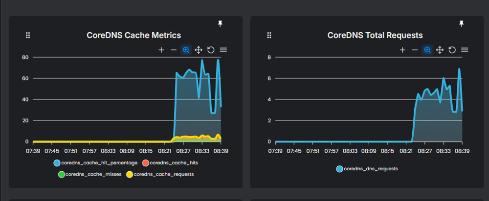
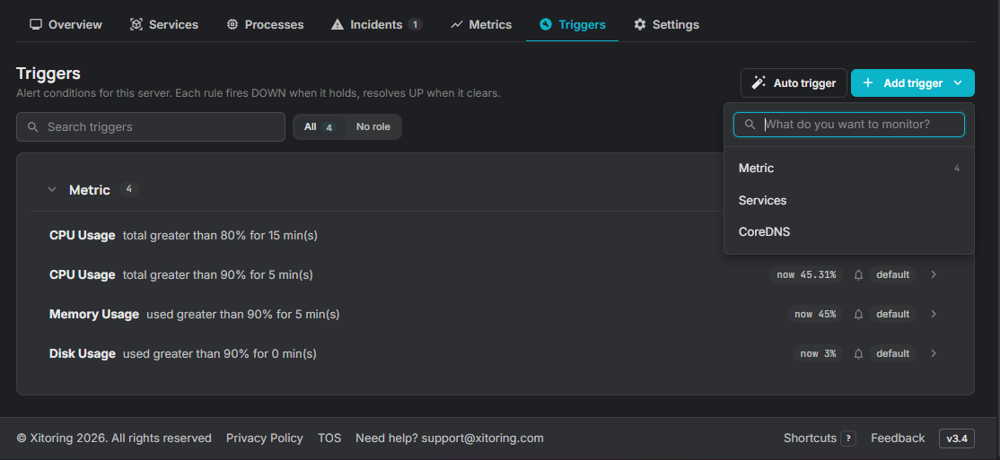
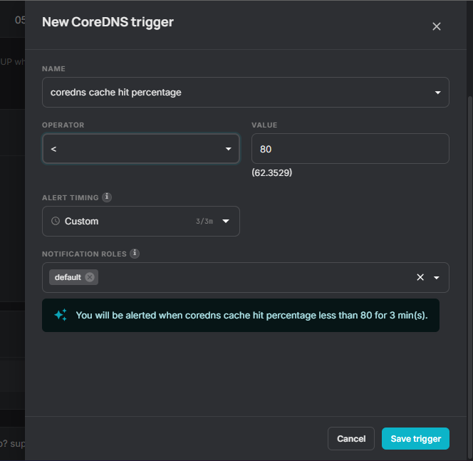
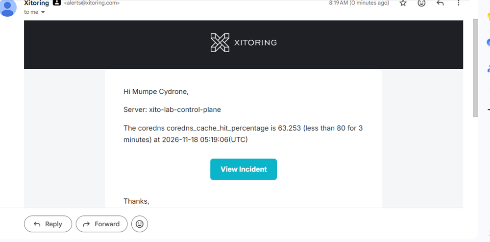
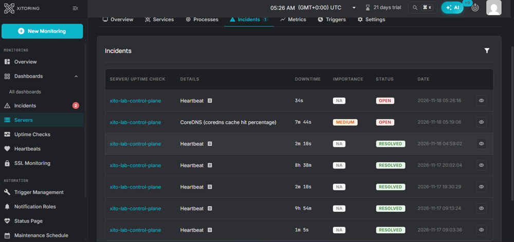

Monitoring CoreDNS in Kubernetes with Xitoring
I tried Xitoring the way a new customer would, wrote down every place I got stuck, and worked out what I’d change. This is an independent sample, not official Xitoring documentation.
1. What we were trying to accomplish
Xitoring has a knowledge base article on monitoring CoreDNS. For Kubernetes it says to deploy the Xitogent agent as a DaemonSet. I wanted to know whether a brand new customer can follow that path and end up with a working alert.
So I played the customer: a local cluster, a free trial, and the docs open in another tab. There were three goals.
- Get CoreDNS metrics from a Kubernetes cluster into the Xitoring dashboard.
- Get an alert when the DNS cache hit rate drops.
- See what happens when CoreDNS disappears completely.
2. How we did it
Step 1. Create a cluster and install the agent
I created a one node cluster with kind, which runs Kubernetes inside Docker. A kind node is just a container, so I stepped inside it and installed Xitogent like I would on a server.
kind create cluster --name xito-lab
docker exec -it xito-lab-control-plane bash
apt-get update && apt-get install -y sudo curlThe install command from Xitoring starts with sudo, and the node image doesn’t have it, so the first attempt failed. After installing it, the command ran and the dashboard picked up the server within a minute.


Step 2. Connect CoreDNS
Here is the picture that took me a while to work out. CoreDNS runs in a pod, but the agent runs on the node and, by default, looks for CoreDNS on its own localhost.
The dashboard’s CoreDNS card said the integration was not detected, and the Enable button stayed greyed out.

The command line has a way round it. It asks for a metrics host and port, so I gave it the address of the kube-dns service.
xitogent integrate
Enter CoreDNS metrics host (default: http://127.0.0.1): http://10.96.0.10
Enter CoreDNS metrics port (default: 9153): 9153
integration setup was successful and config file updated.
Step 3. Give CoreDNS something to do
On a quiet cluster every graph sat at zero, because the counters only move when something asks a question. I started a small pod that keeps doing lookups.
kubectl run dns-test --image=busybox:1.28 --restart=Never -- sh -c "while true; do nslookup kubernetes.default; nslookup example.com; sleep 1; done"

Step 4. Create an alert
On the server’s Triggers tab, the Add trigger button has a CoreDNS option. The form opens with a metric and threshold that make no sense together (panics above 80), so I changed it to the cache hit percentage, below 80. My live reading was about 62, so the alert was certain to fire. On a real cluster you would pick a threshold from your own baseline.


Step 5. Break CoreDNS on purpose
kubectl -n kube-system scale deployment coredns --replicas=03. Findings and results
What happened
| Test | Result |
|---|---|
| Agent install | About a minute. Failed once because the node image has no sudo. |
| CoreDNS integration | Worked once I entered the kube-dns address in the command line. |
| Graphs | Moved off zero within a few minutes of starting the lookup pod. |
| Threshold alert | Saved at about 05:15 UTC. The incident opened at 05:19:06 UTC and the email arrived in the same minute. |
| Data going silent | After scaling CoreDNS to zero, a second incident (Heartbeat) opened at 05:26:16 UTC, and an email said some integrations were not sending statistics. The first incident was still open. |


Three things that slowed me down
1. The Kubernetes route isn’t written down yet
The knowledge base article says to run the agent as a DaemonSet but shows no steps. The docs page says to enable the integration on the server where CoreDNS is installed and expects metrics at localhost. In a cluster, that leaves a newcomer at a greyed out Enable button. The command line’s host prompt is what solves it, and I couldn’t find it written anywhere. When I mistyped the address by one digit, the error only said it failed to connect, without naming the address.
Suggested fix. Add a short Kubernetes section to the CoreDNS docs page: find the service address with one kubectl command, check it with curl, then enter it in xitogent integrate. Put the address in the error message. If a DaemonSet is the recommended route, a ready made manifest would help most.
2. Two docs sentences no longer match the product
The Server Monitoring page says triggers are created from the Server overview page. On 17 November I couldn’t find the control there, only a small plus icon on the Triggers tab. By 18 November the tab had an Add trigger button, so the product has already improved. Separately, the docs have a page for xitogent status, but the CLI overview doesn’t list it and my agent said the command doesn’t exist.
Suggested fix. Point the triggers sentence at the Triggers tab and Add trigger button, with one screenshot. Either list status with the version or platform it belongs to, or retire its page.
3. The “agent stopped reporting” email carries credentials
When my laptop lost power overnight, Xitoring emailed me, which I loved because it was a real alert. But the email body held the server’s registration key, ID and password in plain text, next to a one line fix command. Emails get forwarded, screenshotted and kept for years.
Suggested fix. Link to the server page, where the fix command can sit behind a login, or switch the command to a short lived token.
What looks odd inside a container
The docs don’t mention containers, so a few things looked strange. The memory and disk figures looked like the machine underneath, not a limit on the node (I didn’t confirm where they come from). The Services panel listed 49 services, and the first five I saw were marked dead, such as the display manager and emergency shell, which a kind node isn’t meant to run. I didn’t check the rest.
4. What that means
- The product held up. The install, the graphs and both alerts worked, and the alert reached my inbox within minutes.
- The gap is documentation, not the software. One missing paragraph about the host prompt is the difference between a Kubernetes user succeeding and giving up at a greyed out button.
- Two kinds of alert are worth keeping. A threshold alert says CoreDNS is working badly. A silence alert says the data stopped. They caught different things in my test.
- The fixes are small. A docs section, two corrected sentences and a safer email would remove nearly every snag I hit.
I only tested inside a kind node. I did not test the DaemonSet route, a cluster with more than one node, other CoreDNS versions or paid plan limits. The natural next step is to write the Kubernetes docs section and test the DaemonSet properly.